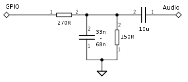

pcm module¶
| Since | Origin / Contributor | Maintainer | Source |
|---|---|---|---|
| 2016-06-05 | Arnim Läuger | Arnim Läuger | pcm.c |
Play sounds through various back-ends.
Sigma-Delta hardware¶
The ESP contains a sigma-delta generator that can be used to synthesize audio with the help of an external low-pass filter. All regular GPIOs (except GPIO0) are able to output the digital waveform, though there is only one single generator.
The external filter circuit is shown in the following schematic. Note that the voltage divider resistors limit the output voltage to 1 VPP. This should match most amplifier boards, but cross-checking against your specific configuration is required.

Important
This driver shares hardware resources with other modules. Thus you can't operate it in parallel to the sigma delta, perf, or pwm modules. They require the sigma-delta generator and the hw_timer, respectively.
Audio format¶
Audio is expected as a mono raw unsigned 8 bit stream at sample rates between 1 k and 16 k samples per second. Regular WAV files can be converted with OSS tools like Audacity or SoX. Adjust the volume before the conversion.
sox jump.wav -r 8000 -b 8 -c 1 jump_8k.u8
Also see play_file.lua in the examples folder.
pcm.new()¶
Initializes the audio driver.
Sigma-Delta driver¶
Syntax¶
pcm.new(pcm.SD, pin)
Parameters¶
pcm.SD use sigma-delta hardware
- pin 1~10, IO index
Returns¶
Audio driver object.
Audio driver sub-module¶
Each audio driver exhibits the same control methods for playing sounds.
pcm.drv:close()¶
Stops playback and releases the audio hardware.
Syntax¶
drv:close()
Parameters¶
none
Returns¶
nil
pcm.drv:on()¶
Register callback functions for events.
Syntax¶
drv:on(event[, cb_fn[, freq]])
Parameters¶
eventidentifier, one of:datacallback function is supposed to return a string containing the next chunk of data.drainedplayback was stopped due to lack of data. The last 2 invocations of thedatacallback didn't provide new chunks in time (intentionally or unintentionally) and the internal buffers were fully consumed.pausedplayback was paused bypcm.drv:pause().stoppedplayback was stopped bypcm.drv:stop().vunew peak data,cb_fnis triggeredfreqtimes per second (1 to 200 Hz).
cb_fncallback function for the specified event. Unregisters previous function if omitted. First parameter isdrv, followed by peak data forvucallback.
Returns¶
nil
pcm.drv:play()¶
Starts playback.
Syntax¶
drv:play(rate)
Parameters¶
rate sample rate. Supported are pcm.RATE_1K, pcm.RATE_2K, pcm.RATE_4K, pcm.RATE_5K, pcm.RATE_8K, pcm.RATE_10K, pcm.RATE_12K, pcm.RATE_16K and defaults to RATE_8K if omitted.
Returns¶
nil
pcm.drv:pause()¶
Pauses playback. A call to drv:play() will resume from the last position.
Syntax¶
drv:pause()
Parameters¶
none
Returns¶
nil
pcm.drv:stop()¶
Stops playback and releases buffered chunks.
Syntax¶
drv:stop()
Parameters¶
none
Returns¶
nil